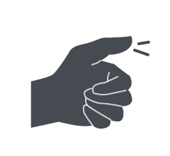
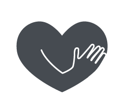

No doubt, it's quite simple for us to pouring water for ourself, but for visually impaired person, or even we are in the dim light, could we still make it smoothly without spilling?
It's one of a collection of design work when I was a student. I entered the 1st Universal Design Award in Taiwan and the Subject was "Tableware". From sketch of concept to 3D modeling, I complete it by myself.
When in dim light, we can't work smoothly as in bright light, such as pouring water. It is simple, but it would overflow if you didn't direct you attention. We can detect the information of "It seems to overflow" from the sense of sight. But, for visually impaired person, they could only see blur feature. It"s hard to pouring water for all of us when we can't normally work the sense of sight.
However, we still can detech lots of signal by hearing, taste, smell, and touch, for expamle, feel and compare the weight of a cup of water with memory, that's one of the walkarounds.
For people lossing the sense of sight, the Problems when pouring water might be:
To be brief, the universal design concept is a laudable goal, Design for All, therefore, we started to focus upon physical requirements, such as those factors that are required to overcome limitation in size, mobility, difficulties in vision, hearing, and so on. However, we could also see some of products emphasisd that usable for everyone, it could work functionally, yet, the form wasn't attractive.
Norman postulated that attractive things can elicit positive emotions such as pleasure. Using a pleasure product, one tends to overlook design faults and "the behavior seems to go al

POSITIVE INFORMATION
The visually impaired usually feel and detect information from the outside by touch. Tactile information could be an redundant cue to prevent from overflowing.

DIGNITY
Appealing to everyone, whether the normal or the visually impaired people. It would be just a piece of tableware which people would be pleasure and willing to use it, at least, approach, not avoidance.
I came up with a idea of buoy. The buoy rises as user is pouring water into the cup, and the buoy keeps rising until it touchs th user's thumb, thus, user notices the informaiton and stop pouring. The context will be:
I formed a concept of a cup (precisely, a mug) in this competetion. I tried to aim at designing a cup that everyone would like to access in the first impression rather than avoidance at the first, in additon, all of us could use it without problem. The purpose of design that we make is human, not the product itself, therefore, we should not only focus on the function, but also consider the emotional response of user.
Even thought there were still many challenges, such as sanitary: how could we keep it clean?
" If we design a product which only the disabled would be willing to use, that is just Barrier-free."
─ the judgement of 1st Universal Design Award, Tony K.M. Chang
{kind=link}
{kind=link}